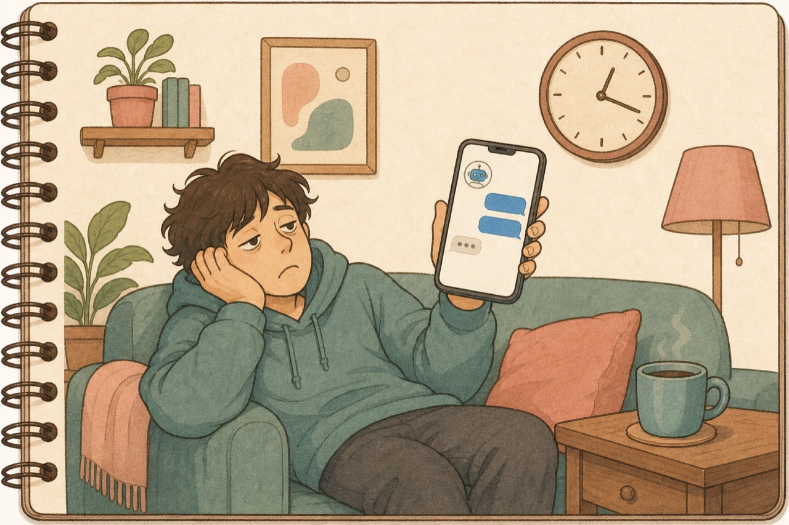
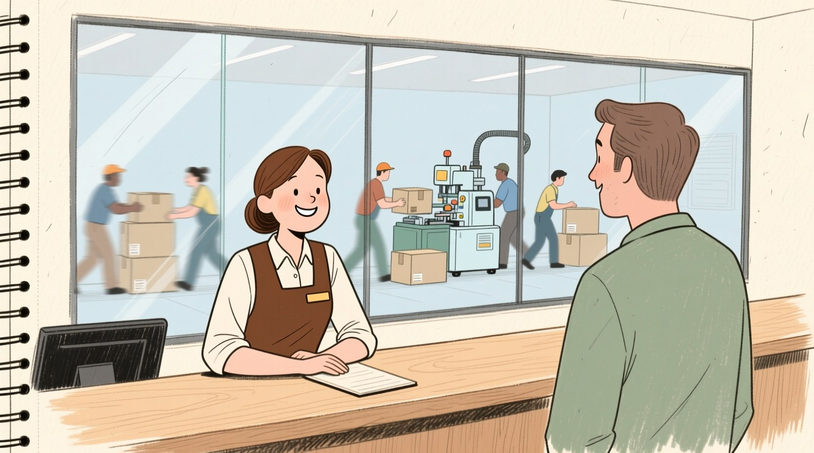
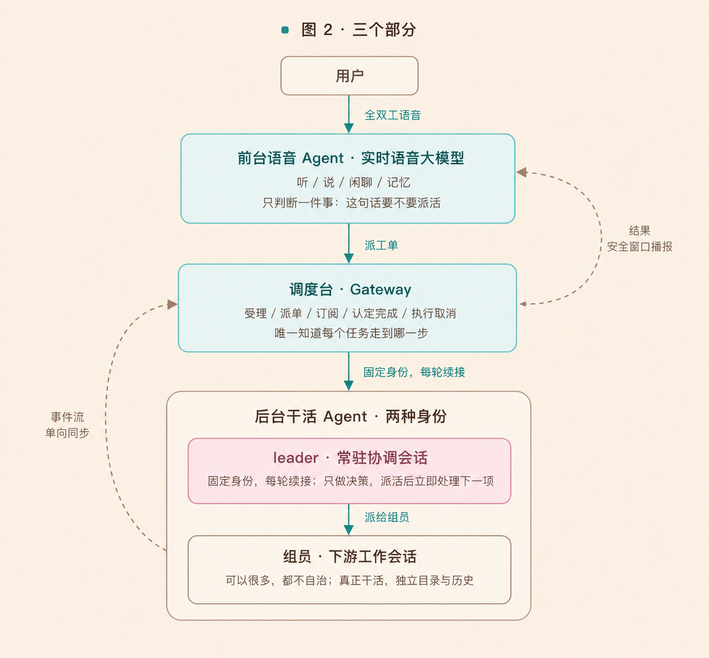
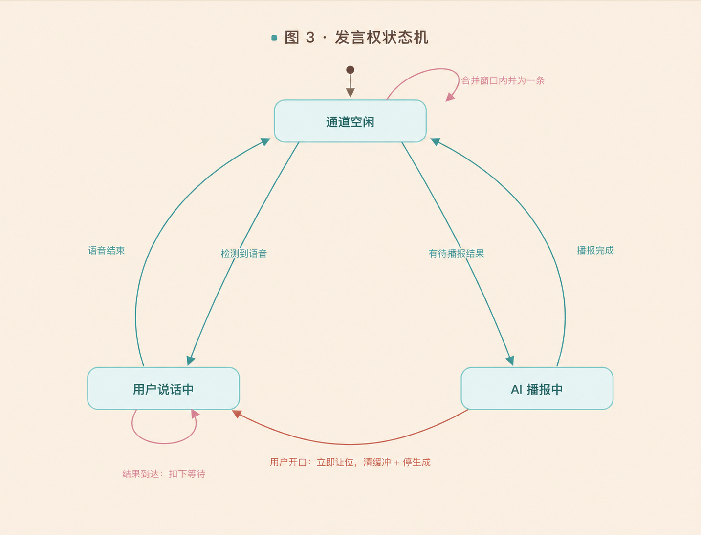
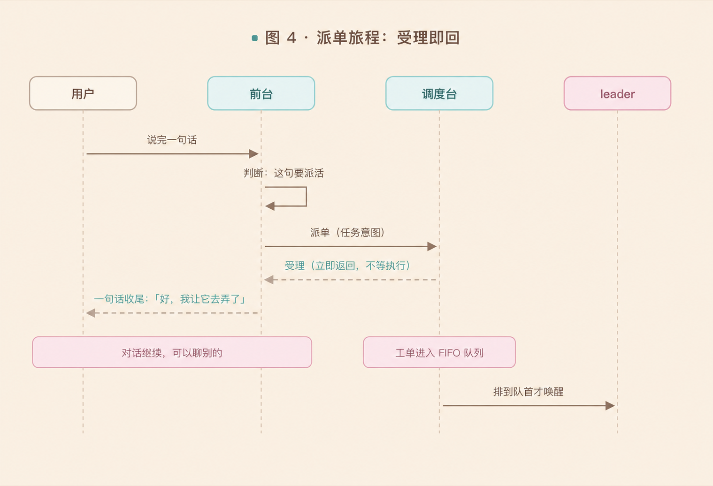
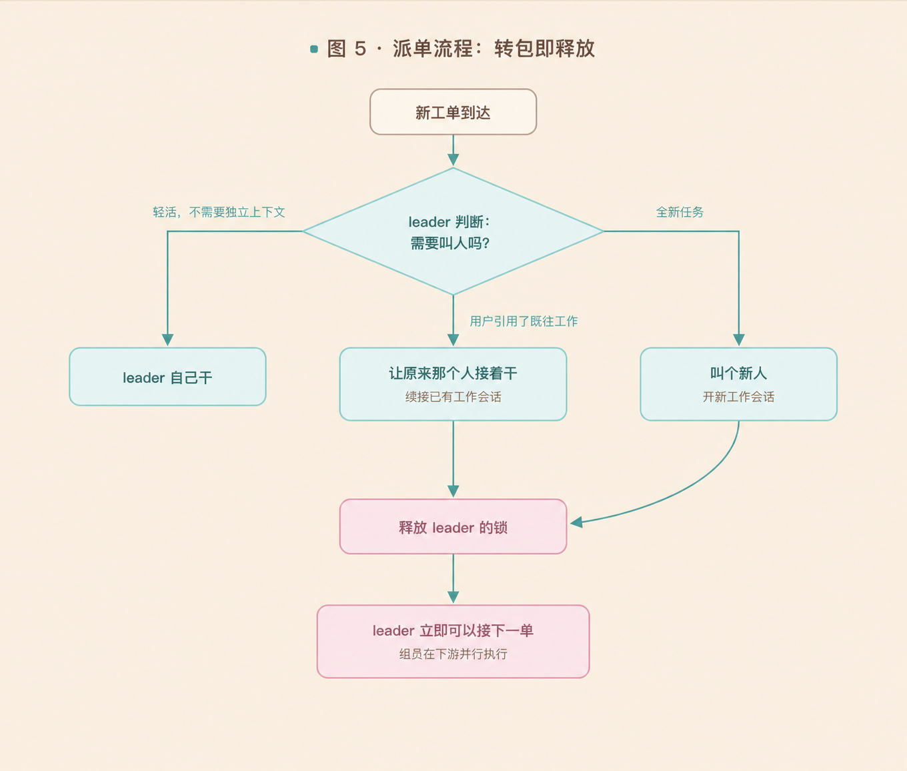
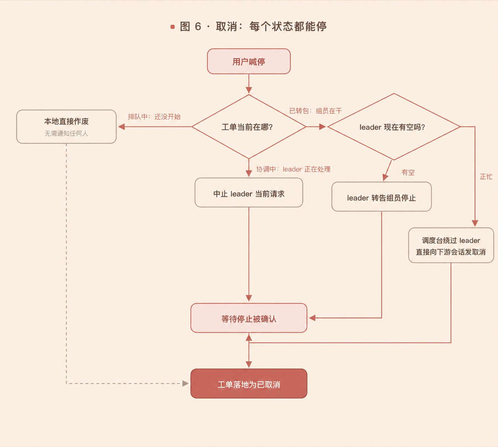
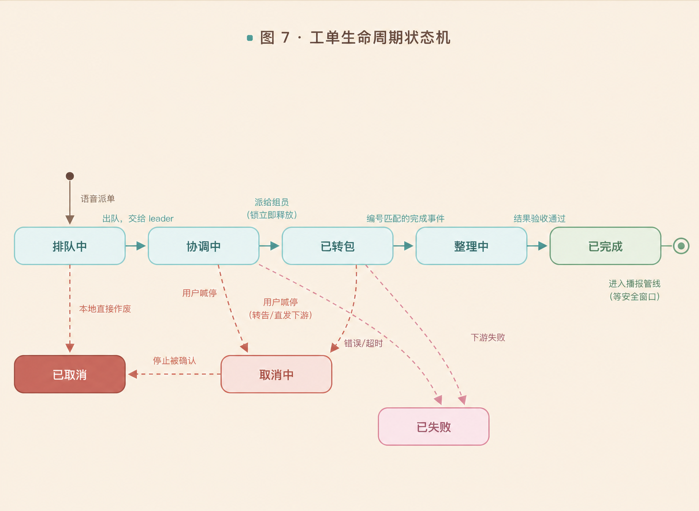

一、从一个熟悉的坏体验说起
用过 IM 里的 Agent（比如把 OpenClaw 接进飞书/钉钉/微信）的人都熟悉这个时刻：你在对话里下达一个任务，然后——长久的沉默。它是在干还是卡住了？不知道。这期间，这个对话窗口也别想干别的：再问个问题，要么排队，要么和进行中的任务搅在一起。消息发出去石沉大海，你只能盯着屏幕，等那句不知道什么时候来的回复。

对话被工作绑架了。 这个问题在桌面软件时代就出现过：早期程序把耗时操作放在界面线程里跑，界面直接冻死，解决办法是把耗时工作挪到后台线程。Agent 产品大多还停在"冻死"阶段，qwen-audio-agent 是少数真正解决了它的实现：
- 对话是常驻的——全双工实时语音，随时可打断，永不阻塞；
- 工作是异步资源——进队、调度、执行、回报，整条生命周期都有人管；
- 任务的结果会挑一个安全时机自然回到对话里："已经好了。"
所以，它是一套以语音为主线的 Agent 运行系统。核心是两件事：一、把程序写死的消息队列，换成 AI 处理的消息队列。派单、指代消解、播报合并都交给模型的语义理解——用模型能力换掉规则引擎。二、把后端的单 Agent，拆成可扩展的多 Agent。主 Agent 只做决策：下派任务，然后立即处理下一项。管对话的、管调度的、管执行的各自独立，每层都可替换。

二、三个部分，各管一段
这套系统分三个部分：前台语音 Agent、后台干活 Agent，以及串联两者的调度台。

前台语音 Agent：只负责一件事——这句话要不要派活。 它能做的只有七件事：派任务、取消任务、问进度、问时间、记忆、清单、转达权限决定；不能选择或控制后台会话，不能决定任务怎么执行，不能挑工具和子 Agent。这份清单短，是刻意设计。
调度台：串联前后的枢纽，也是唯一知道每个任务"走到哪一步"的角色。 工单的排队、进度、发言权都登记在它这里——后台 Agent 可以换，记录只以调度台为准。它不干活，只做调度：受理、派单、订阅、认定完成、执行取消。
后台干活 Agent 分两种身份。leader 唯一常驻：每个用户在调度台手里有一个固定身份的协调会话，每轮请求都续接同一个。所有语音请求的上下文都累积在这一个会话里，"刚才那个"这种指代因此永远有唯一解。组员可以很多，但都不自治：由 leader 按需创建、并行干活，它的状态、完成认定、取消确认全部握在调度台手里。
三、四条协同链路
接下来看三个部分之间是怎么协同的。
3.1前台 ↔ 调度台：发言权与播报
先设想几个糟糕的场面：
-
场面：AI 正在播报结果，用户开口说话，两个声音叠在一起。
因此：人的轮次永远压过机器的轮次——用户一开口，AI 的播报立即让位（清播放缓冲、停当前生成）。每一次打断都对应状态机里的一次标准迁移；
-
场面：用户正说到一半，一个结果到了，直接插播。
因此：机器不抢话筒——结果只能在通道完全空闲时进入，否则扣下等待；
-
场面：三个任务前后脚完成，三条播报连珠炮一样砸过来。
因此：通知按信息到达率设计，不按次数设计——相近时间完成的结果合并成一条："三件事都好了：第一……第二……"；
-
场面：通道一直忙，系统把这条结果弄丢了，用户永远不知道任务做完了。
因此：结果可以晚到，绝不能丢——等待队列 + 有上限的退避重试。丢一条结果，用户对系统的信任就塌一角，这比"晚说几秒"严重得多。
这四条规则收敛成一台发言权状态机：

用户主动问"任务怎么样了"的时候，调度台直接拿自己的看板回答：毫秒级、不惊动后台——任务状态是系统自己的数据，问一句"干了没有"不该付出唤醒一个 LLM 的代价。唯一例外是任务已转包给组员，这时才向后台发一条高优先级内部查询（见 3.3）。
3.2调度台 ↔ leader：派单与唤起

几个要点：
- 派单返回的只有"受理"，没有"结果"——执行要排队、要等 leader、可能几分钟，但都与对话无关；
- 排队发生在调度台，用户根本感觉不到。 你派三个任务，听到的只是三句"好"，它们在后端排成一队依次处理。
这套链路的核心就一句话：串行的只有决策，并发的全是执行。（"刚才那个"为什么永远有唯一解，见第 2 节，这里不重复。）
同样先设想坏情况：
-
场面：多个任务同时涌进 leader，指代互相打架，它分不清"那个"是哪个。
因此：决策必须串行——FIFO 队列同一时刻只放一张工单进去；
-
场面：leader 抱着一个长任务从头干到尾，后面所有任务干等，并发形同虚设。
因此：执行必须可以并行——转包给组员后锁立即释放。
于是派单流程长这样：

两处不显然的设计：
- 谁来干活，由 leader 看着用户原话现场决定。 调度台不写死分发规则，只给 leader 一份候选人列表（现有工作会话）和一页用人规则，剩下的交给模型的语义理解。代价是协调者每轮都要过一次 LLM，它的速度直接决定系统反应快慢，天然适合快而稳的模型；
- 工单一派出去，leader 的锁和调度通道双双释放，转头就能接下一单。
3.3组员 & leader → 调度台：进度回流与完成认定
这里有三个设计纪律：
- 进度靠订阅不靠汇报——组员对谁都不用主动汇报：它只按 ACP 标准照常往外推进展事件，调度台在转包那一刻自己挂好订阅。组员不用为接入做任何改造，所以任何按标准实现的后台 Agent 拿来就能用；
- 进度查询只读调度台的本地记录——leader 不许去翻组员的目录、更不许凭自己的记忆编，查不到就老实说查不到；
- 完成必须按转包编号验明正身——忙、空、无关、过期的结果统统不能冒充，用户收到的不会是别人的结果。
载体是 ACP（Agent Client Protocol）：一套"程序使唤 AI Agent"的开放标准——怎么开会话、怎么派任务、怎么收进度、怎么叫停，全都规定死了。任何 Agent 按这套标准实现一遍，调度台拿过来就能用，不需要为每家单独写对接代码。组员干活时按标准持续往外推进展事件，调度台把进展沉淀进自己的看板，完成事件也经同一条订阅按编号核对。这就是 Kimi Code、Qoder、OpenCode 等九家后端即插即用的原因（Claude Code、Codex 走适配器）。
3.4取消：每个状态都必须有一条"真的能停"的路径
用户说了"取消"，界面上工单灰了，但组员的活还在跑——token 照烧，文件照改。"取消"必须让执行真的停下来，而不是让界面看起来停了。
难的地方在于：取消请求到达时，工单可能处在完全不同的阶段，每个阶段的"停法"不一样：

两个设计点：
- 已转包是取消最难的情形——执行权已经不在 leader 手上了。所以留了两条路：leader 有空就走"正式渠道"转告（协调上下文不断）；leader 正忙，调度台直接向组员会话发取消（图快）。两条路都要等组员确认停了，工单才从"取消中"落地为"已取消"；
- 调度台敢"绕过 leader"，是因为取消是安全管理动作，不是协作动作——但它会事后给 leader 补一条记录，让协调上下文知道"那件事被用户叫停了"，避免 leader 下次还在等一个永远不会来的结果。
四、一张状态机看全局
把四条链路收拢，每张工单的生命周期是一台显式状态机：

五、设计启示
- 交互循环与工作循环必须分开。 这是全文的核心。任何"干活时对话就死"的 Agent，用过这套架构之后都会感觉像坏了。
- 语音交互设计已经可以当作一种范式。 语音通道是单工稀缺资源，"谁在说、谁在等、谁能插话"必须是一台显式状态机，而不是散落在各处的时序运气；执行可以无限并行，人的注意力不能——什么值得打断用户、什么该合并低语，是播报要回答的问题。这套"发言权状态机 + 播报调度"的组合，可以直接搬进任何语音产品。
六、还能往哪走
以下不是项目现状，是顺着它现有机制的两步推演：
- 主 Agent 可以按难易分流，而不只做派发。 一句话能答的（问进度、问时间、查清单）直接答，要开工作区、跑几分钟的才下派——前台"问一句'干了没有'不该付出唤醒一个 LLM 的代价"，这个原则可以原样下沉一层。
- 主 Agent 可以一次取出消息队列的所有消息，再统一派发。 现在的 FIFO 同一时刻只放一张工单，"那个"指哪张靠串行硬保住；批量取出后，主 Agent 看着这个人说的所有消息做决策——指代按语义消解，本来就是同一件事的几条合并成一个任务，派发顺序按轻重排，而不只按到达排。
如果你在做 Agent 相关产品，这份源码值得完整读一遍——它是我读过对"语音 + 异步多任务 Agent"思考得最完整的开源实现。